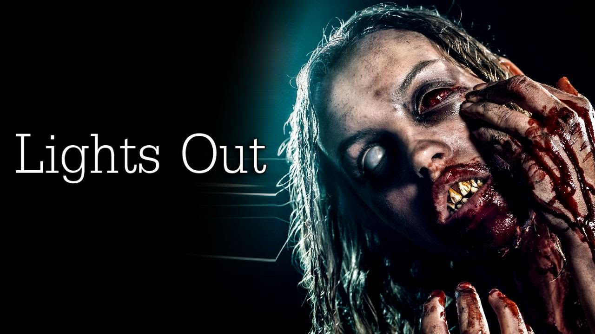
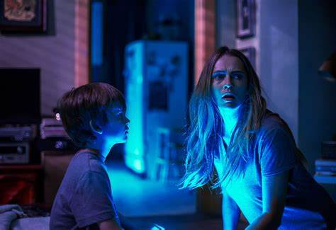
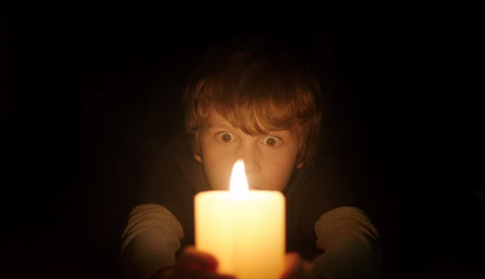

Lights Out
Lights Out is a 2016 American supernatural horror film directed by David F. Sandberg in his directorial debut, produced by Lawrence Grey, James Wan, and Eric Heisserer and written by Heisserer. It stars Teresa Palmer, Gabriel Bateman, Billy Burke, and Maria Bello. It is based on Sandberg's 2013 short film of the same name and features Lotta Losten, who starred in the short.
In the film, a young woman must confront her childhood fears to protect her brother from a vengeful supernatural entity holding a mysterious attachment to their mother. After the short film's success, Sandberg announced a film adaptation based on his short film. Principal photography for the film began in June 2015 in Los Angeles. Filming wrapped on August 5, 2015.
